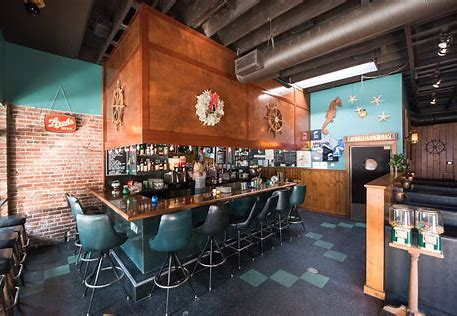
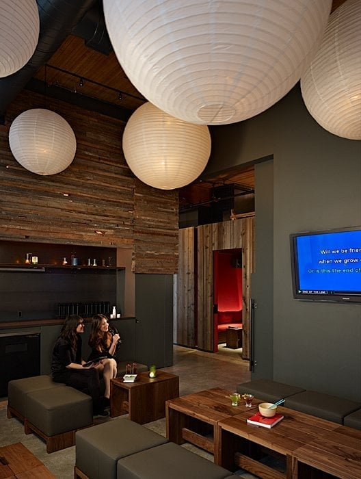
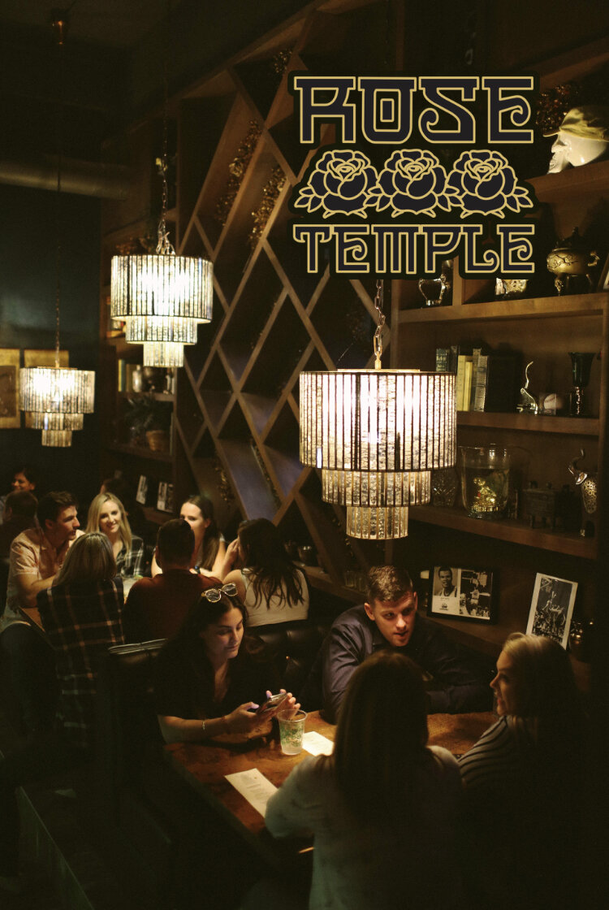

Bars in Capitol Hill
Party Bars
Unicorn

Unicorn is a carnival themed bar with wild drink concoctions such as the Unicorn Jizz. A cocktail made up of mango vodka, triple sec, oj, sour, sprite, and grenadine. This bar is right in the heart of the current CHOP activity.
Rock Box

Rock Box is a full bar, charcuterie and cheese plates, and a happy hour with drink specials and $4 person/hour karaoke make this a great destination for your small group. For night owls, the karaoke rooms stay open past 2am from Thursday through Saturday.
Rose Temple

Rose Temple is one of those fun bars that truly has a drink for everyone. There’s a kamikaze shooter involving edible glitter and a gummy shark, a Campari and radler boilermaker, alcoholic slushies, a lemon sorbet cava float, and, of course, cans of Rainier.